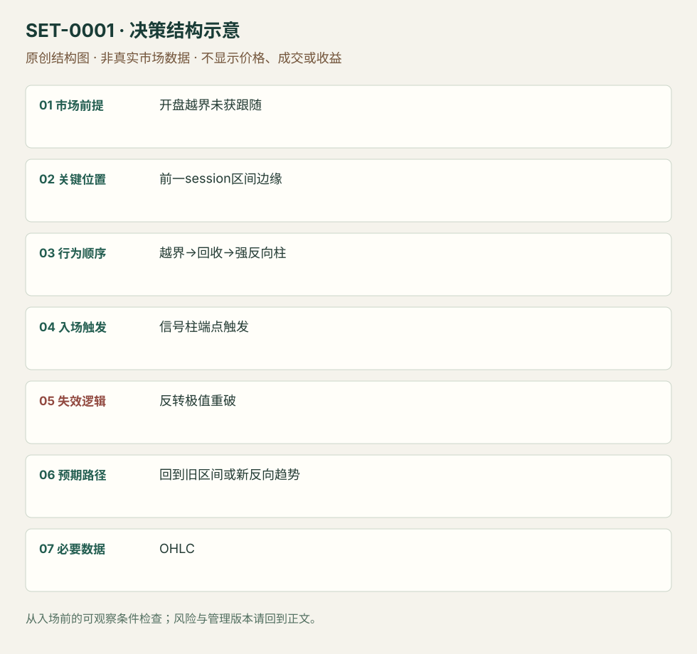

前一交易区间突破失败后的开盘反转
Opening Failed Breakout of Prior Range · SET-0001 · reviewed · v1.0.0
盈利证据：not_established。审查范围与来源版本见第13节；未知字段保留缺失原因。
1. 名称与快速概览
开盘缺口把价格带出前一交易区间，但外侧推进迅速失败；强反向信号柱后考虑回到旧区间。重新在外侧建立推进会否定反转；开盘下跌本身不足以买入。
记录口径：PA core；必要数据 OHLC、previous_session_levels。名称性质：编辑性描述名，英文保留来源术语以便检索。reviewed 只表示本条规则与证据记录审查通过，盈利状态为 not_established。
2. 本质与行为假说
可观察的是越界、回收和后续反向柱。Brooks将此解释为失败突破，空头回补可能帮助上涨；“被套空头”是行为假说，并没有参与者身份数据。缺口只提供位置，不能代替触发。
3. 适用市场与环境
前一session区间清楚，开盘首次试探外侧，反向实体与收盘强度已经出现。若连续大趋势柱继续扩大外侧区间，应保留原方向假说。
来源实用市场：ES期货（Brooks讲义）。
Session：美股/ES现金参考段 09:30–16:00 America/New_York；收盘前平仓。期货夜盘单独建背景，不将其并入开盘区间。
跨市场：本版不主张已经验证的跨市场迁移；更换市场必须重定数据来源、流动性与session。
4. 出现前的观察清单
必要：提前画前一交易区间边缘；已有突破与失败迹象。增强：反向柱收于自身高/低端。否决：仅一根长影线、强趋势连续收在区间外、反转止损距离已不可执行。
5. 形成过程与状态转换
旧区间标记 → 开盘越界 → 无法继续并回收 → 反向强柱形成 → 突破信号柱端点 → 检查能否留在旧区间。触发前若再次放量推进外侧，撤销等待反转的计划。
6. Entry trigger 与执行方式
来源版：多头等待靠近高点收盘的多头柱，在其高点上方用买入触发单；空头镜像。此处突破的是信号柱，不是追逐第一根下跌柱。订单触发与成交价分开记录。
7. Invalidation 与止损逻辑
来源原则：保护止损放在整个反转结构极值之外，不能因入场柱不是最低柱就只用入场柱低点。研究补充：重新接受区间外价格或反向跟随迅速消失应重审；时间阈值尚未测试。
8. Exit、target 与 trade management
先使用事前已知的旧区间内部障碍、开盘价或相反边缘作为管理参考。若演变为持续趋势，可按新形成的主要摆动保护；讲义给出退出标记，但不提供统一获利倍数。本库日内收盘前退出是边界约束。
9. 常见 variations
多空镜像与缺口大小作为同一记录的变体。没有缺口的盘中前日极值失败属于同族位置变体，不另计数。若等待的是整段拍卖接受而非快速回收，参见相近Profile条目。
10. 失败方式与不交易条件
正常亏损：合格反向柱之后仍创新极值。未成立：把开盘下跌直接当作拒绝。执行偏离：追入已远离结构的反转。来源歧义：如何量化“强柱”需自己固定定义；不能事后把亏损全部排除。
11. 与相近 setups 的区别
12. 图表与案例解读
已查看公开讲义PDF第4页（印刷Slide 3），图中虚线右侧先跌出旧区间，随后绿色反转位置和粉色趋势买点。画面支持失败突破后上涨的结构；此页未显示可核对日期、品种标识与成交单，不据此认定真实成交。
- [VIS-000001] 开盘下破旧区间后向上反转并持续上涨的K线图；定位：PDF第4页，印刷Slide 3；左下开盘虚线附近。先看虚线附近的下破与回收，再看上涨展开；右侧完整走势属于事后信息。 验证：chart_viewed。
本地原创示意（VIS-000058，非真实市场数据）：

小屏阅读可打开原尺寸示意图并缩放。

此图用于对照识别顺序与风险定义；不计入真实案例覆盖率。
视觉材料元数据与查看范围
- VIS-000001 · real_source_chart / structure_and_trigger / chart_viewed
品种：未知/不适用；日期：未知/不适用；周期：未知/不适用；时区：未知/不适用
该页品种、日期、周期与时区未清晰标明；未见实际成交证明 - VIS-000058 · synthetic_structure_diagram / illustration_only / generated_not_market_evidence
品种：未知/不适用；日期：未知/不适用；周期：未知/不适用；时区：未知/不适用
无真实品种、日期或价格：这是结构示意
13. 证据、分歧与未知项
单一原始来源族，规则与图表可复核；概率百分比不采用为收益结论。入场与结构止损来自讲义，目标框架与时间退出是本研究明确添加的管理模块。
- [EVD-000001] Al Brooks，《Patterns on the Open》，SRC-0001；定位：PDF页4及11–13（印刷Slide 3、10–12）。支持：失败突破后等强信号柱；触发单越过信号端点；结构止损越过反转极值
审查例外：此条只有一份富信息原始资料，足以还原本条规则；独立佐证有限，未用背景页冒充第二份核验。后续优先寻找独立规则/失败案例。
14. 可用于复盘的检查表
- ☐ 下单前的前提可核对：开盘越界未获跟随
- ☐ 事前标记位置：前一session区间边缘
- ☐ 行为按顺序出现：越界→回收→强反向柱
- ☐ 实际触发符合选定版本：信号柱端点触发
- ☐ 事先写明本次否定条件：反转极值重破
- ☐ 目标/路径只用当时已知信息：回到旧区间或新反向趋势
- ☐ 数据满足 OHLC；记录时间、点差、滑点、队列和未成交
- ☐ 记录截止平仓及规则偏离；正常亏损不事后改成“未成立”
15. 后续验证问题
固定首次越界后的观察窗口与强柱定义，用所有当时满足条件的样本检验；比较快速回收与持续外侧接受。测试需包含开盘滑点、触发后未成交和普通亏损。
双向相关导航
- SET-0002 五分钟开盘区间突破 ORB等待固定开盘区间形成并顺突破入场；本条已有外侧突破失败并交易反向回收。
- SET-0007 三推高潮后的反转 楔形反转必须出现分开的三次高潮推进；本条不要求三推。
- SET-0005 内包线突破失败陷阱 前日范围失败使用session边界；本条依赖特定内包与短窗口序列。
- SET-0050 隔夜方向失败后反穿现金开盘线 0001 在前一session范围边界失败触发；本条须隔夜方向失败并反穿今天开盘线，即使仍在旧范围外也可触发。
本条来源：SRC-0001